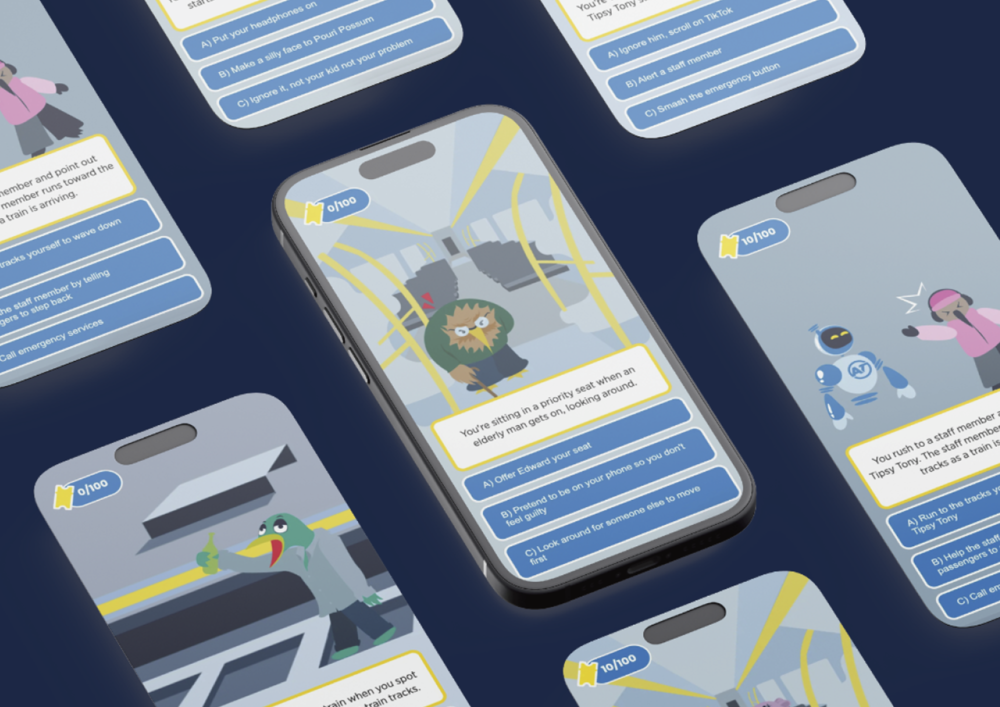
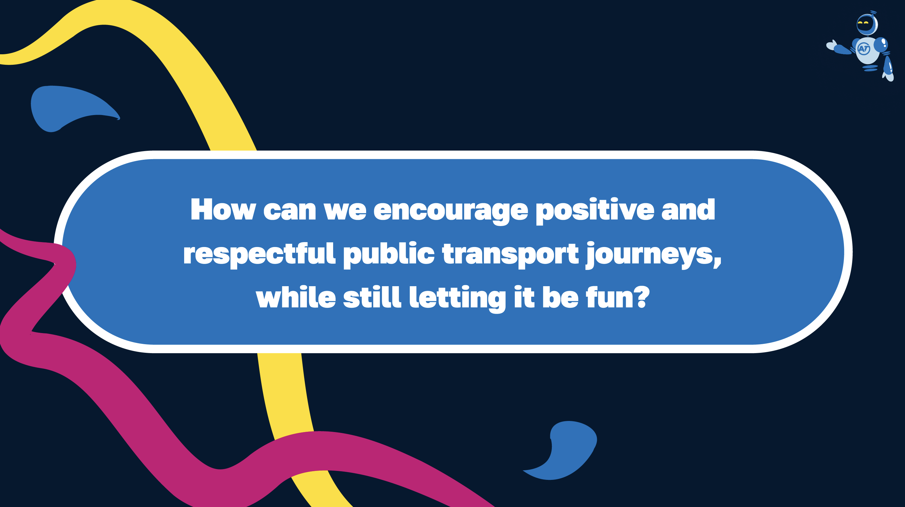

GROUP PROJECT - 2025
Metro Mission
Group, Academic Project
8 Weeks
Figma, Illustrator
Game, merch
encouraging positive etiquette on public transport through a game. gets people to reflect on how their choices affect others.
THE PROBLEM
bad habits on public transport. The issue isnt a certain group of people, its the fact that it isnt really taught in a fun an engaging way that would actually stick.
PROJECT EVOLUTION
dk man lol
what would i say here..not sure..
RESEARCH QUESTION

we did user testing, game testing, and developed a lot the final collateral.
here will be some photos about questionnaire revision
here will be some photos of user interviews
From reciving user input, we were able to refine the concept, experience, and questionnaire to better.. fit them..lol.
THE FINAL OUTCOME
we projected the screen
we also asked ourselves, how could we make sure this experience would be long lasting and memorable, and not just forgetten once the final game is released? so we decided to develop a mini range of --things-- that would be released alongside the game. I worked on the cards, campaign timeline, and bus decals